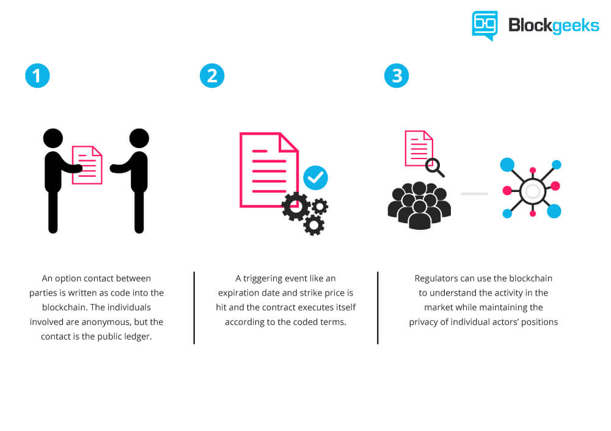

Ethereum is similar to Bitcoin in the fact that it is a digital cryptocurrency that is currently being traded on the internet. However, that's where the similarities end. At its core, Ethereum is more than just a currency. The way that it is generated has it being used by app developers to pay for certain services over networks that use Ethereum. What happens after said services are done are up to Smart Contracts that these servers run; basically, it is to ensure that whatever service the app developer pays for gets done and certain conditions are met. Ethereum also allows for a customizable operation tpo be created by a developer instead of just having one use for the currency.
As stated previously, smart contracts are used by servers that use Ethereum as a currency to ensure that people are basically not getting ripped off. By having a contract set in place where the computer can automatically check to see if certain conditions are met, there won't be any buyers remorse and there also won't be much lazy work to be found on certain projects.
